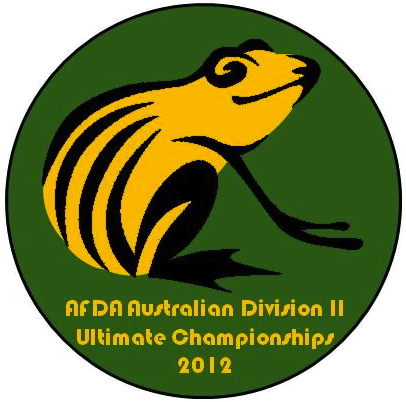

|  |
AFDA Australian Division II Ultimate Championships 2012Melbourne, Australia - 14-15 April 2012 |
All the details you need to get involved in the 2012 AFDA Australian Division II Ultimate Championships!
Registration is open! Start organising your teams and rosters now!
What's this frisbee business? Want to learn more about the sport of Ultimate Frisbee?
The AFDA recognises that not all teams are able to qualify for or play at Division 1 Nationals for a variety of reasons (failure to qualify, lack of players, financial reasons, etc). Division 2 Nationals is an effort to boost participation, increase the depth of ultimate frisbee players in Australia and allow all players regardless of team skill level to participate in a strong Nationals-level competition.
Absolutely. For teams that weren't able to qualify for the Division 1 Nationals in Newcastle, this is your AFDA championships and you'll be recognised as AFDA Australian Division 2 National Champions as such.
Entry is open to any team that isn't playing Division 1 Nationals as well. Any team that did not qualify for Division 1 Nationals through the Division 1 Regional Championships automatically qualifies for entry into Division 2 Nationals.
Exact roster information is currently being determined by the AFDA and we will keep you posted. It is likely that some players who will be playing Division 1 Nationals will be allowed to play Division II Nationals with a different team (such as a development squad or league team), however there may be limits applied to the number and strength of such players.
Absolutely. This is intended as a tournament for teams such as yours to work towards. If you're able to form an open or women's team (often league teams will be able to field both an open and a women's team), then get involved!
Ultimate frisbee is a non-contact team sport played with a frisbee. It combines elements of netball, touch football, and grid-iron into a fast paced, athletic sport. Competitions usually have co-ed teams, where men and women play together. It is also unique because the sport is self-refereed - due to the 'Spirit of the Game', players are responsible for adhering to and overseeing the rules.
During a game, the basic aim is for the team with the frisbee to pass it up the field to others on their team and complete a pass into the endzone. At the same time the defensive team is trying to intercept it or knock it down. If they succeed, they get possession of the frisbee and are trying to score in the other endzone.
Ultimate is played on a grass field, narrower than a soccer field. Teams play with seven players on the field each, plus substitutes.
Ultimate is played in over 30 countries worldwide, is a sport at the World Games, and has a strong presence in universities and high schools.
Ultimate relies upon a Spirit of the Game that places the responsibility for fair play on every player. Players on the field make their own calls when violations occur - there are no referees. If there is disagreement regarding an incident, the frisbee returns to the player who made the last pass and the game resumes. The Spirit of the Game award is a highly coveted award at tournaments.
A basic outline of the rules is here, and the full rules are here.
Ultimate is recognised by the Australian Sports Commission.
With thanks to the Australian Flying Disc Association
This year, the Australian Division II Ultimate Championships will be held over 2 days on Saturday 14th to Sunday 15th of April, 2012.
The Australian Division II Ultimate Championships is being held this year at the Albert Park Synthetic Fields. The location of the Australian F1 Grand Prix and the the Melbourne Hat, the fields are purpose-built synthetic fields at Albert Park. The fields are located approximately 15 minutes from the Melbourne CBD.
We are encouraging teams to apply now if they are anticipating not sending a team to Division 1 Nationals. However, we recognise lots of teams would like to attempt to qualify for Division 1 Nationals and so we will have a better idea of team participation following the Regional Qualification Championships.
At the moment, we have interest from teams from Brisbane, Canberra, Sydney, Hobart, Melbourne, Geelong, Adelaide & Perth - it should be a great inaugural Div II Nationals and a tough competition!
Start by registering your team through the AFDA Registration Site for Division 2 Nationals.
If you haven't registered for the AFDA before, you'll need to obtain a free AFDA membership here. This AFDA number is used for tournament registration and fees are paid as part of your tournament fees.
$150 team fee; Player fee will be approximately $60 per player (the final fee may be slightly higher, but will confirm at a later date). Cost includes tournament fee, insurance, player pack, lunch on both days + extras.
Payment deadlines:
Fees to be paid to the following account:
Account Name: Chilly Ultimate Club
Bank: ANZ
BSB Number: 013395
Account Number: 587611483
Once your payment has been received, we'll update your team's details on the AFDA Registration Site with Paid and you'll be fully registered for the AFDA Division 2 Nationals!
Schedule to follow. We'll be aiming for an earlier finish on Sunday to allow teams travelling to Melbourne for the tournament enough time to head home.
For information regarding the AFDA policy on Div 2 Nationals as well as player eligibility, please visit: http://afda.com/policies/AFDA%20Division%20II%20Nationals.pdf
The Australian Division 2 Ultimate Championships 2012 will be held in Melbourne.
By Air
Melbourne has two main airports: Tullamarine Airport (International and Domestic) and Avalon (Airport (Domestic). Melbourne is accesible by all major airlines in Australia, including Qantas, Virgin Australia, Tiger and a whole range of International airlines.
By Train & Bus
Melbourne has an extensive train system for the metro and rural areas. You can view timetables, maps and work out travel plans at the Metlink Melbourne website. Rural train and bus travel is conducted by V/Line. In addition, there are a number of bus companies operating in Victoria.
There are plenty of accommodation options catering for all budgets in Melbourne. You can find a range of options at the Visit Victoria site, as well as checking hotel booking websites such as Wotif.
Depending on billet availability, we can attempt to organise some billeting for individuals and on a case-by-case basis for teams. Get in contact with the TOC if you are interested in billeting. We recommend that you seek out your own accommodation if possible.
The fields are approximately 15 minutes from the Melbourne CBD, located next to the Baseball Fields on Hockey Drive, Albert Park. The most direct way to the fields via public transport from the CBD is the Route 96 Tram, departing from Bourke Street and disemabrking at the Fraser Street Light Rail Station.
Visit Victoria has a summary of options available to you to travel around Melbourne.
Melbourne has an extensive public transport system for the metro and rural areas. You can view timetables, maps and work out travel plans at the Metlink Melbourne website.
Melbourne has a range of car hire services, including the major companies such as Avis, Budget, Europcar, Hertzand Thrifty.
In addition, for short trips, you may want to use a car sharing service such as Flexicar or Go Get, however you may be limited by pickup/drop-off locations.
Hello all,
I hope you are all getting excited about Div 2 Nats fast approaching! Some important information for you all - please forward on to the players in your team as you see fit. I have also attached a pdf of the location of the fields and the party venue for the Saturday night.
1) Player Fees
The player fees for this tournament are $65 per person. Note, that there is a reduced junior fee of $55. The payment deadline is Friday 13th April. For players only playing on one day only, the player fee is $40.
What do players get for their money?
- A player pack that includes a cleat bag, towel, water bottle and pedometer!
- Lunch and snacks on both days
- Sunday morning breakfast (non-hot)
- BBQ during the final
- Entrance to the party and food at the party
- Matches on purpose-built all-weather synthetic fields
- AFDA insurance whilst playing
Please pay a bulk fee which covers your entire team (e.g., if 12 regular and 2 junior players on you team, please pay 12x$65 + 2x$55 = $890). Make sure your team name is in the subject field on your transfer.
Player fees to be paid to the following account:
Account Name: Chilly Ultimate Club
Bank: ANZ
BSB Number: 013395
Account Number: 587611483
After you have transferred the player fees, please send Martin O'Brien (lepetitmartin@hotmail.com) an email detailing how many regular players and how many juniors you have paid for.
Your team rosters should all be finalised (http://afda.com/rego/showdivision.php?divisionid=2008). Player numbers have been taken as final from today, so any extras on your team after today may mean less food/snacks/goodies for your team.
2) Party Venue
The party venue will be at the Elephant and Wheelbarrow pub, 169 Fitzroy Street, St Kilda (http://stkilda.elephantandwheelbarrow.com.au/). It is a 10 minute walk from the fields. We have booked the back room from 6-10pm and food will be served there throughout this period (this is covered by your player fee). Please see the attached document for the location of the party venue. Also, if you are still looking for accommodation, there is a backpackers right next to/above the pub.
3) Game times and Fixtures
We are finalising the fixtures and will send these out sometime this week. There will likely be two pools of 5, with round robin games taking place on the Saturday and Sunday morning (each team will get one bye). There will then be cross overs, semis, placing games and the final on the Sunday. Games will likely start at 9:30 on Saturday and 9:00am on Sunday. It is likely that two interstate teams will get a bye first thing on Saturday morning. Expect to play 6-7 games over the weekend. The final, presentations and prizes will be finished up by 5pm on Sunday.
4) Tournament theme/logo
To celebrate this event we offer you its first logo - the Corroboree frog, an Australian native amphibian living in the Alpine region of Victoria and NSW. This yellow and black frog is a very rare sight with only 200-300 individuals remaining and as such it is now considered critically endangered (it is actually considered Australia's most endangered species). Far from being fragile, this tough critter synthesises its own toxic mucus and lives in rough terrain and survives in the snow at high altitudes. On the logo (see attached picture) you can see our cherished Green and Gold: The yellow of the Corroboree frog is a dark yellow similar to the G&G, and the green represents the lush vegetation where the animal is sometimes found.
We invite you to gather at Division II Nationals as a Corroboree. Corroboree was derived from the Aboriginal word caribberie by the European settlers of Australia. A corroboree is a ceremonial meeting or gathering. In a broader sense, a corroboree can also include sporting events. So what are you waiting for, leap to this - the first Ultimate Corroboree of its kind! Join the other registered teams and experience Division 2 Nationals!
5) Looking for replacement/extra players or know of players looking for a team?
If you are looking for extra players, let me know and I will liaise with any captains/players that have contacted me saying that they are looking for a team. Captains, please let me know if you have had to turn away players from your team as your roster is already full - I will put them in touch with captains that need a replacement/extra player or two.
Anything else, please don't hesitate to drop me an email.
Looking forward to seeing you in Melbourne!
Chris F (on behalf of the Chilly Ultimate Frisbee Club)
Hello all,
If you are receiving this email, your team has been identified as a possible candidate for attending the Australian Ultimate Frisbee Division 2 Nationals tournament in Melbourne on the 14th-15th of April 2012. I am writing to you to confirm that this tournament is going ahead, so if your team was unable to qualify for or play at Division 1 Nationals for a variety of reasons (failure to qualify, lack of players, financial reasons, etc), then I encourage you to sign up/commit to Div 2 Nats! We have secured some great fields - purpose-built synthetic fields at the picturesque Albert Park (the location for the Australian Grand Prix and Melbourne Hat).
Here is some information for you all:
Tournament information:
Date: Saturday 14th & Sunday 15th April
Location: Albert Park Synthetic Fields (just south of the CBD)
Cost: $150 team fee; Player fee will be approximately $60 per player (the final fee may be slightly higher, but will confirm at a later date). Cost includes tournament fee, insurance, player pack, lunch on both days + extras
Please register you team here and add players:
http://afda.com/rego/showcompetition.php?competitionid=1179
Payment deadlines:
Team Fee ($150) - Friday 16th March
Player Fee (Approx. $60 - TBC, see above) - Friday 6th April
Fees to be paid to the following account:
Account Name: Chilly Ultimate Club
Bank: ANZ
BSB Number: 013395
Account Number: 587611483
Website:
http://ausdiv2nats.com/ - updates will also be put on the website as and when they occur.
We will be sending out more information after each region has held their qualifiers for Div 1 Nationals, so stay tuned!
For information regarding the AFDA policy on Div 2 Nationals as well as player eligibility, please visit: http://afda.com/policies/AFDA%20Division%20II%20Nationals.pdf
Look forward to seeing you all in Melbourne in April!
Chris F (on behalf of the Chilly Ultimate Club)
Email: ausdiv2nats at gmail . com
Twitter: @AusDiv2Nats